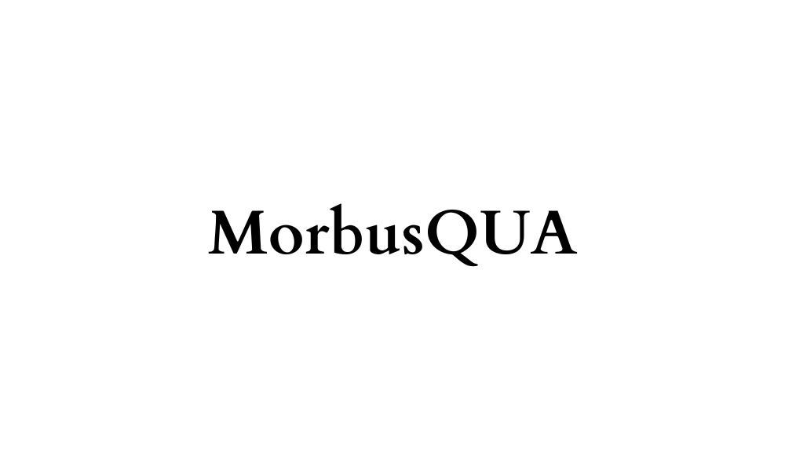

La herramienta “MorbusQUA” tiene la función de ayudar, orientar e impulsar la acción del autodiagnóstico.
Además, promover el derecho a la libertad de información y consumo de la misma; e intentar erradicar la desinformación en las redes que puede llegar a causar otros
problemas a la sociedad.

Diccionario médico, en el cual se pueden consultar los nombres, significados y algunos datos de diversas patologías, medicamentos,
operaciones, tratamientos, entre otros. Esto con el objetivo de resolver algunas de las dudas que no pudieron ser resueltas en una consulta médica.